01
Rentang ETA yang jujur.
“22-31 menit”, bukan satu angka yang seolah pasti. Anda tahu skenario terbaik dan terburuk.

Navigate Smarter. Travel Better.Masalah
700 ribu
Pengguna harian TransJakarta, MRT, dan LRT, baru sekitar 6% populasi Jakarta.
Sumber: BPS DKI Jakarta via DPRD DKI, Juli 2026
20-30 menit
Waktu tunggu yang dialami pengguna rutin pada jam sibuk.
Sumber: proposal tim
17,8 km/jam
Kecepatan rata-rata saat jam sibuk, jadi waktu tiba sulit ditebak.
Sumber: TomTom Traffic Index 2025
2,4-4,2x
Pengguna rutin di Jakarta lebih sensitif pada waktu tunggu dibanding waktu di dalam kendaraan.
Sumber: Kreindler dkk., 2023
Rute sudah tersedia. Tapi, apakah perjalananmu akan berjalan sesuai rencana?
Fitur
“22-31 menit”, bukan satu angka yang seolah pasti. Anda tahu skenario terbaik dan terburuk.
Setiap titik pindah moda diberi level rendah, sedang, atau tinggi, dihitung dari jarak antar kedatangan (headway) data jadwal GTFS.
Opsi 1 dari 3
AsalBlok M
TujuanKota
22-31 mnt
Rentang waktu tempuh
Tanya dengan bahasa sehari-hari, misalnya “dari Blok M ke Kota naik apa?”, dan dapat jawaban yang bersumber dari data rute yang sama.
Pengguna Rutin mendapat ringkasan cepat. Pengguna Baru mendapat panduan langkah demi langkah dengan istilah yang dijelaskan.
Satu ketukan: penuh, sedang, atau lengang. Laporan langsung memengaruhi tampilan.
Cara kerja
Autocomplete tempat umum, hasil muncul cepat.
Bandingkan 2-3 opsi rute berdasarkan waktu, biaya, dan berapa kali berpindah.
Tanya asisten kapan pun bingung.
Alur data
Video promosi
Dari masalah transportasi umum Jakarta sampai cara SmartRoute membantu Anda merencanakan perjalanan.
Video tidak dapat diputar di browser ini Unduh video (MP4)
Pengguna
“Saya ingin tahu seberapa mepet jadwalku, dan apakah perlu berangkat lebih awal.”
Mendapat
“Saya tidak paham istilah halte dan koridor.”
Mendapat
Posisi kami
SmartRoute AI menghadirkan pendekatan pelengkap yang membantu pengguna memahami perjalanan, mengantisipasi perpindahan kendaraan, dan memilih rute sesuai kebutuhan mereka.
| Fokus aplikasi transportasi resmi | Fokus SmartRoute AI |
|---|---|
| Jadwal, rute, dan tarif dasar | Ketidakpastian: rentang ETA dan risiko berpindah |
| Informasi umum untuk semua pengguna | Panduan yang menyesuaikan pengguna rutin atau pengguna baru |
| Pencarian rute | Tanya-jawab wayfinding dengan bahasa sehari-hari |
Peta jalan
Item berlabel Target bergantung pada ketersediaan data resmi dan belum menjadi bagian prototipe.
Tim
Hasby Wira Al Muflih
Ketua Tim
Amelia Cahya Anggraeni
UI/UX Designer
Bayu Indra Pratama
AI/ML Engineer
Rakkan Shaka Raufa
UI/UX Designer & AI/ML Engineer
M. Khalifa Aisy Hafiy
Backend & Data Engineer
Kontak tim hasbywiraalmuflih9@gmail.com